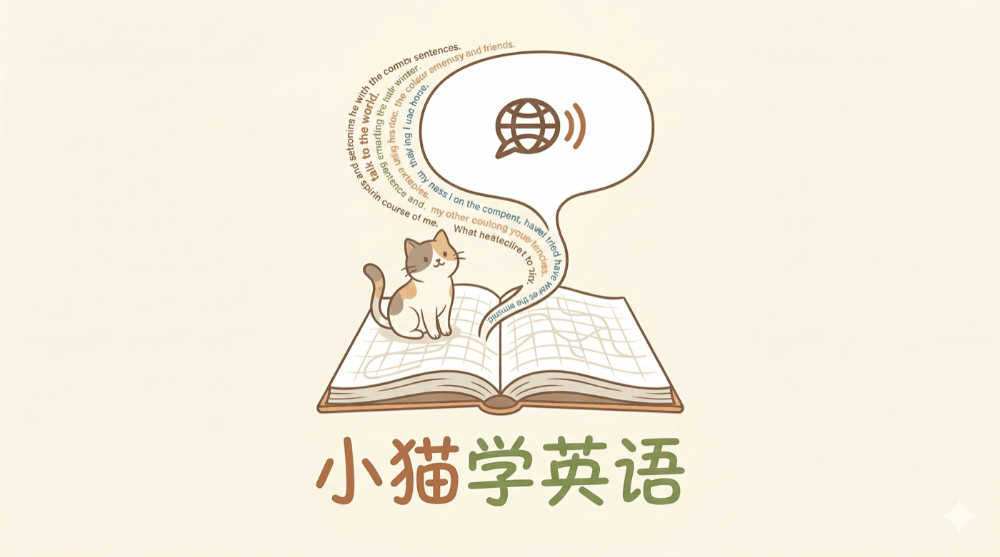

精选项目案例
服务过 新能源汽车 · 快消饮品 · 工业电气 · 家电 · 金融基金 等行业的品牌客户——熟悉品牌方的交付标准：从需求沟通、现场执行到多版本输出，按排期稳定交付。
覆盖活动落地的完整链条：前期筹备、报批合规、物料与流程统筹、现场执行与应急处理。
线下文化空间 · 独立运营
独立运营 / Independent Operator
以周末模式独立运营上海市中心的一家线下文化空间，从选题、邀约、宣发到现场与收支全环节独立完成，一年累计落地数十场活动。
查看详情 →
品牌商业展会 · 统筹与执行
展会执行 / 现场统筹
在珠宝品牌总部市场部负责大型商业展会的物料文字统筹与现场执行——一段站在品牌方视角、从筹备到撤展的全周期展会经历。
查看详情 →
商业演出报批与现场执行
演出申报 / 合规管理 / 现场执行
先后为一家头部 Livehouse 与一家喜剧厂牌负责营业性演出的报批与现场落地，熟悉文旅审批的规范与节点，可独立承担活动的合规环节。
查看详情 →
熟练使用主流 AIGC 工具，持续跟踪海外 AI 工作流发展，可根据实际需求编写自动化脚本，应用于真实内容生产场景。

小猫学英语：带语境的长句记忆工具
以"高频句子"为核心的英语学习网站，从想法到上线独立完成。
英语学习工具 / English Learning Tool
查看详情 →

丢了么：寻物海报自动生成器
用脚本自动化排版生成海报图片，提升走失宠物信息的传播效率。
Python · Pillow · OpenCV · Automation
查看详情 →
内容流：海外自媒体自动翻译及发布
面向海外平台的一键翻译与发布流程，把内容生产到分发跑成自动化管线。
Midjourney · Runway · LLM · Workflow
查看详情 →

AI 个人网站架构
本网站的静态搭建，全部用 vibe coding 完成——自己定需求、自己实现。（你正在看的就是它）
HTML · CSS · JS · AI Assist